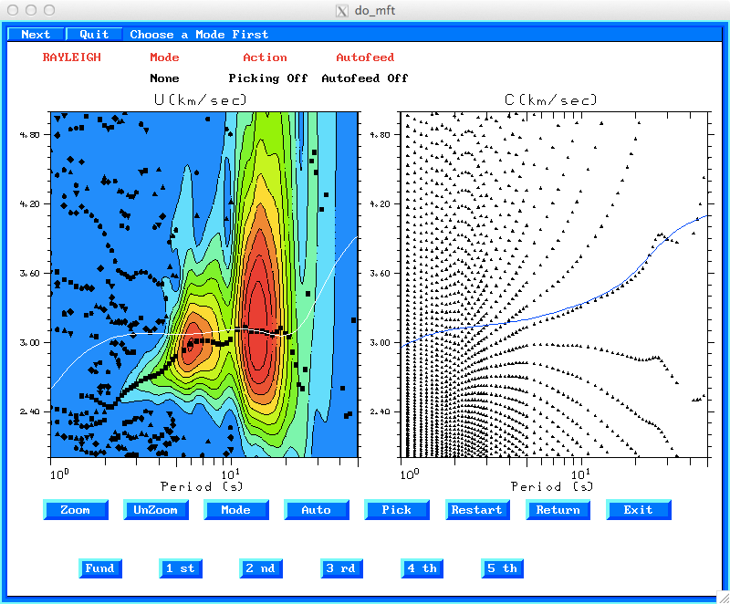

export PATH=:.:$PATHYou will find the following files in this directory:
The two scripts MFTDOOVERLAY and PHVDOOVERLAY can be modified to use results of your tomography to provide reference dispersion curves.
Note that if you do not have an Intel/AMD computer, e.g., a
SPARC you will have to get the correct byte order in the Sac file,
but entering the commands
saccvt -I < SIUCBHZBLOBHZ.WSTK > t
mv t SIUCBHZBLOBHZ.WSTK
do_mft -h
Usage: do_mft [-Nnumberperpage] [-G] [-T] [-11MIN min11] [-11MAX max11] [-DMIN dmin] [-DMAX dmax] sacfiles
e.g.: do_mft -N2 -G -T *Z
-Nnumberperpage (default 10) number of file menu items per page
this option is useful when using a slow connection since writing
a complete menu takes time
-G (default off) The default dispersion file name is of the form
StationComponent.dsp, e.g., SLMBHZ.dsp
When working with ground-noise cross-correlation for inter-station Green functions, the
naming is Station1Component1Station2Component2.dsp , e.g., SLMBHZFVMBHZ.dsp
-T (default off) run script MFTDOOVERLAY
-11MIN min11
-11MAX max11
-DMIN dmin
-DMAX dmax
These options control the selection of the files for MFT
analysis. The first two use the number in the IHDR11 field,
which is the number of waveforms stacked for cross-correlation
of ground noise. The last two select the distances
-IG (default false) Inter-station phase velocity from cross-correlation
-h (default false) Usage
Some of these options are useful when working with the cross-correlation of ground noise. If there are N stations, then there are N(N-1)/2 station pairs. When working with TA data, the number of station pairs is huge for manual analysis using do_mft. The -DMIN and -DMAX flags permit the selection of a range of distances. The IHDR11 field is created by the gsac stack command set this parameter with the number of traces stacked. The chances of a useful cross-correlation should be better if the number of traces stacked is larger.
The -T option permits the display of the Tomo buttons of do_mft. On pressing these buttons, the scripts MFTDOOVERLAY or PHVDOOVERLAY are executed.
The -IG option permits the interactive phase velocity analysis.
cd EMPIRICAL_GREEN/DIST/EXAMPLE1Now create the eigenfunctions which are used to provide the theoretical dispersion curves:
DOSRFStart the example by entering
do_mft -G -IG -T *.WSTK
The processing example follows:
Place the mouse cursor on the trace of interest, and click. You
will then see the next page.
Click on "Units" to select the physical units of the trace.
For quantitative studies using spectral amplitudes, e.g., to
determine earthquake source parameters, the proper physical unit
must be used. For my source inversion processing, the traces
always represent ground motion in m/sec.
When working with empirical Green's functions from noise
cross-correlation, select "Counts" as the unit. For such
studies we are interested in the dispersion and not the spectral
amplitude.
After clicking on the "Do MFT" at the top of the page, we get a
page for specifying parameters for the program sacmft96
which does the work. Recall that the purpose of do_mft is
to graphically select the output from sacmft.
In this menu, I have have selected the period range of 1.0 to
50.0 seconds and identified the wave type as "Rayleigh" by
clicking on the buttons and selecting a value. The "PhvPeak" menu
item appears only because of the "-IG" flag used when starting do_mft.
Clicking on "PhvPeak" will either give the message "1st" or "1st
& 2nd".
The purpose of this is the following. The multiple filter
analysis consists of applying a narrow band pass filter to the
waveform. Up to 10 envelope peaks are determined. This
may be useful to follow a mode in the presence of other
signal. However since each envelope peak can be used to
estimate a phase velocity, and because each phase velocity
estimate has other possible values because of the N2π phase
ambiguity, the phase velocity display can be very cluttered and
difficult to use. To keep that clean, and assuming that the
larger spectral amplitudes (envelope peak values) will have better
determined phase velocities, this menu restricts output to the
largest or largest two envelope peaks.
Upon clicking on "DoMFT", the program sacmft96 is run,
and the following display is shown. At the bottom of that display
will be a button "Tomo" because of the "-T" flag when do_mft
was started. On clicking "Tomo" , a dispersion curve in
white (note this only works when the background is shaded) is
displayed and the "Tomo" button is removed.
This path between two stations of the Saint Louis University
component of the New Madrid Seismic Network (NM) goes through part
of the Illinois Basin which has deep sections of Paleozoic
strata.
This is the reason that the observed dispersion at short periods
lies beneath the model prediction.
If we now click the "PhVel" button a new image appears. The
group velocity overlay picture is reproduced from the previous
display. If we again click the "Tomo" button, the model predicted
phase velocities are displayed together with the possible phase
velocities. The "Tomo" button is now displayed. The purpose
of the overlay is to use the prior knowledge of the predicted
curve, which is based on a reasonable velocity model for the area,
to resolve the N2π phase ambiguity.
"Autofeed" is set the processing state, so that the 2nd and 3rd
menus do not appear. This assumes that one is comfortable with the
processing parameters. The effect is that fewer mouse movements
and clicks are required. This is very important when processing
many, many waveforms.
Now click on "Auto" which brings up a menu to define the mode.

After the mode is selected, the top of the figure will display
the parameters. "Auto Picking" means that a rubber band can
be used to select a group of points closest to the line.
The selected points are plotted in red in the next figure. As
phase velocity values are selected, the corresponding group
velocity values are highlighted. This provides confidence that the
proper mode is selected.
One can also use the "Zoom" buttom to focus in on part of
the plot. Click on "Zoom" and then click on a point in
the right figure and move the mouse. You will see a box open.
Click again and the region will be expanded. You will also
see the selected points. You can now select a few more, here
shown in red.
When done selecting, click "Exit" you will asked whether to
save the picks. You do not have to save the picks if you do not
believe them. In this case we will save them. The file
created used the original file name and appends a .phv, e.g.,
SIUCBHZBLOBHZ.WSTK.phv to identify the phase velocity
selection. The use of the file name occurs because the "-G"
flag is used in invoking do_mft.
You are now returned to to the group velocity selection page. We
again use the "Auto" command, identify the "Fund" mode, and select
the dispersion. The corresponding spectral amplitudes are colored.
For earthquake studies, the shape of the amplitude spectrum has
some theoretical expectations as a function of period. This
knowledge can be used to define the range of acceptable periods.
On clicking the "Exit" the user is asked whether to save the results in the file SIUCBHZBLOBHZ.WSTK.dsp. We will respond "Yes" to this question. The control returns to the first page display that lists the file names.
Since this discussion focused on the dispersion estimates, there
was no discussion of the "Match" button which uses the group
velocity picks to phase match filter the seismogram to isolate a
mode.
The two files SIUBHZBLOBHZ.WSTK.dsp and SIUCBHZBLOBHZ.WSTK.phv
are very similar. Both have many columns. The group velocity output
is identified by the initial MFT96 and the phase velocity by the
initial PHV96. The SIUCBHZBLOBHZ.WSTK.phv file has three
additional columns
MFT96 R U 0 20 3.07357 0.66166 285.5515 54.7 3.9580e+02 37.714802 -89.217400 39.171902 -86.522202 0 1 19.309999 COMMENT: BLO BHZ 1970 1 0 0The columns are as follow:
MFT96 R U 0 19 3.12174 0.64843 285.5515 54.7 4.7050e+02 37.714802 -89.217400 39.171902 -86.522202 0 1 18.469999 COMMENT: BLO BHZ 1970 1 0 0
PHV96 R C 0 20 3.57038 0.00100 285.5515 54.7 3.9580e+02 37.714802 -89.217400 39.171902 -86.522202 0 1 19.309999 COMMENT: BLO BHZ 1970 1 0 0 -1.436470 3.073600 -1
PHV96 R C 0 19 3.54042 0.00100 285.5515 54.7 4.7050e+02 37.714802 -89.217400 39.171902 -86.522202 0 1 18.469999 COMMENT: BLO BHZ 1970 1 0 0 -1.920620 3.121700 -1
MFTSRF *.dsp *.phvwe get the dispersion in the surf96 format, e.g.,
SURF96 R U X 0 20 3.07357 0.66166
SURF96 R U X 0 19 3.12174 0.64843
SURF96 R U X 0 18 3.09009 0.60191
SURF96 R U X 0 17 3.06323 0.55863
SURF96 R U X 0 16 3.07775 0.53076
SURF96 R U X 0 15 3.09434 0.50297
SURF96 R U X 0 14 3.09599 0.46994
SURF96 R U X 0 13 3.09202 0.43525
.............
SURF96 R C X 0 2.4 2.85734 0.00100
SURF96 R C X 0 2.3 2.83691 0.00100
SURF96 R C X 0 2.2 2.81739 0.00100
SURF96 R C X 0 2.1 2.79642 0.00100
SURF96 R C X 0 2 2.75870 0.00100
SURF96 R C X 0 1.9 2.73027 0.00100
SURF96 R C X 0 1.8 2.70266 0.00100